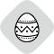

Об’єкти нематеріальної культурної спадщини
Густота елементів нематеріальної культурної спадщини за регіонами
(умовних одиниць на 1 тис. км²)
| до 0,1 | |
| 0,1-0,25 | |
| 0,26-0,5 | |
| понад 0,5 |
Види елементів нематеріальної культурної спадщини:
| усні традиції та форми вираження, виконавське мистецтво | |
| звичаї, обряди, святкування | |
|  | традиційні ремесла |
Місця та ареали сучасного побутування, внесені (або номіновані для внесення) до переліків:
| ЮНЕСКО | |
| національного | |
| обласних (регіональних) |